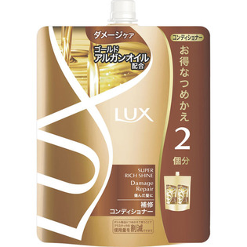

返回列表
产品名称：ラックススーパーリッチシャインダメージリペア補修コンディショナーつめかえ用

ユニリーバ・ジャパン ラックススーパーリッチシャインダメージリペア補修コンディショナーつめかえ用 ６６０ｇ
メーカー ユニリーバ・ジャパン
JANコード 4902111733333
商品の特徴
お得なつめかえ2回分
- 成分・分量
- ＜成分＞
水、ステアリルアルコール、グリセリン、ジメチコン、ベヘントリモニウムクロリド、パラフィン、アルガニアスピノサ核油、加水分解ヒアルロン酸、ヒアルロン酸ヒドロキシプロピルトリモニウム、スクワラン、酢酸トコフェロール、アルギニン、リシンHCl、ミネラルオイル、グルタミン酸、アモジメチコン、PG、DPG、セトリモニウムクロリド、PEG-180M、C12-14）s-パレス-5、（C12-14）s-パレス-7、PEG-7プロピルヘプチルエーテル、EDTA-2Na、フェノキシエタノール、メチルイソチアゾリノン、メチルクロロイソチアゾリノン、香料、黄203、赤504、紫401
- 用法及び用量
- -